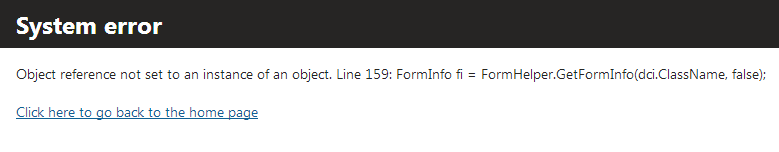
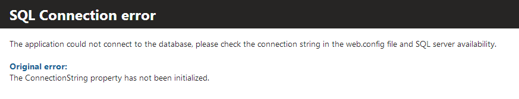

Designing secure error messages
When designing error messages, you should always consider the level of information revealed to the user. If you reveal too much information, the user may be overwhelmed and confused. Moreover, malicious users may exploit this information to gain detailed understanding of the system.
On the other hand, if you do not provide enough information for the user to understand the problem, seeing such error messages may be very frustrating for the user.
Information you should NOT include in the error messages:
Stack trace
Debug information
Information you should include in the error messages:
What is the problem (generic description)
What can the user do to fix the problem (suggestions)
What can the user do to prevent this problem in the future
Wrong

Wrong - displaying debug information in error messages.
Correct

Correct - debug and stack trace information are not included in the error message, but the user learns the cause of the error.
Handled and unhandled errors
The error pages should be consistent throughout the whole system. Configuring different error pages for handled errors and unhandled errors (a page redirected by ASP.NET using the <customErrors> web.config key) can be a severe security risk.
You should have only one error page for both of these cases. Find more information in the Creating custom error handling pages topic.
Time based errors
The time needed for processing a page after encountering an error can be considerably different from the processing time in other cases. The attackers can use this difference to guess if their input has caused any problems in the system.
There is no general recommendation on how to solve this trouble. However, you can try to provide some malicious input yourself and observe how much time it takes the system to complete the request. This way, you can find weaknesses in the system.
Storing the debug and trace information in the event log
Instead of showing detailed information about the problem in the error message, store the debug data and stack trace into the event log. The following example logs an event in the event log:
using CMS.EventLog;private void LogEvent(Exception ex){ // Logs an error type event EventLogProvider.LogEvent(EventType.ERROR, "API Example", "APIEXAMPLE", eventDescription: "An error happened. Message: " + ex.Message + ", StackTrace:" + ex.StackTrace);}Configuring the error messages
To configure the system to display custom error messages, modify the web.config file, as described in the Web.config file settings topic.
Disabling debugging and tracing
To disable debugging and tracing before going live, see Web.config file settings.